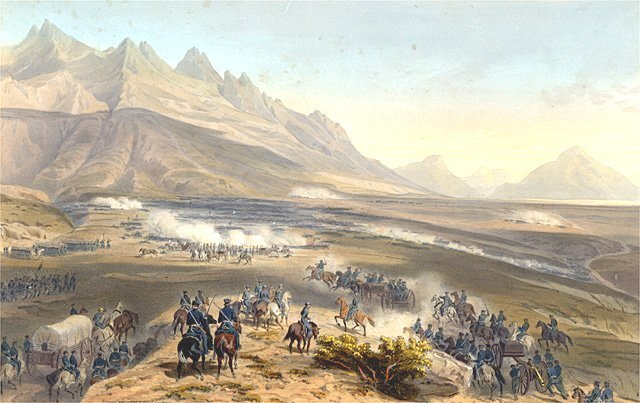
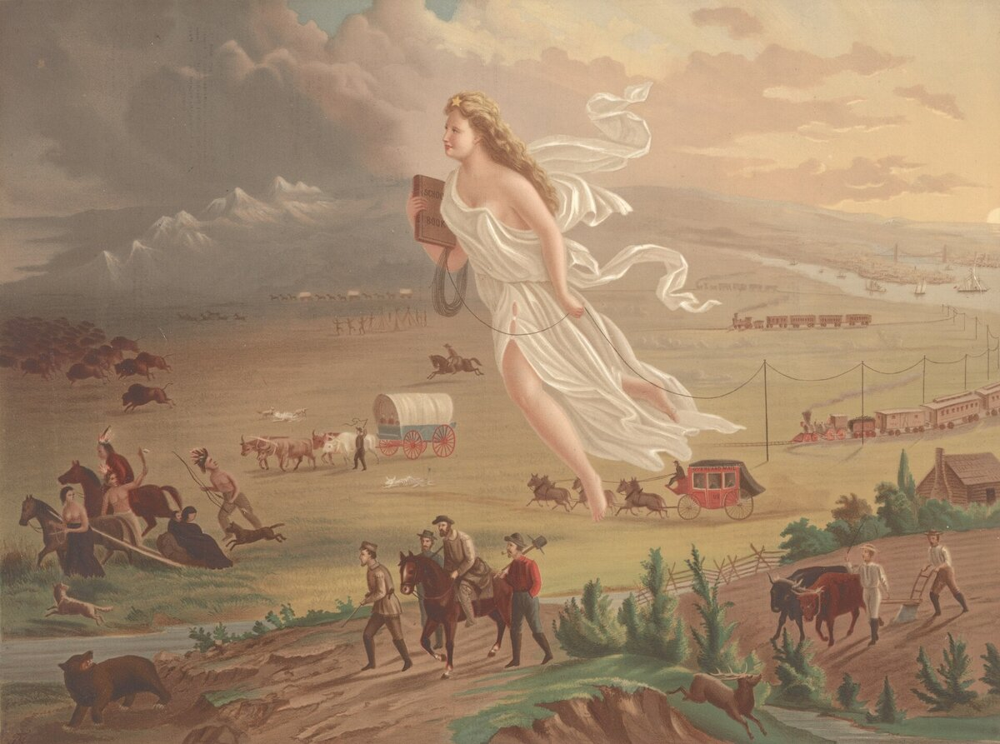

C2 · American History
Manifest Destiny: Expansion or Ideology?
A phrase coined by a magazine editor in 1845 is now taught as the engine of a century. The question is whether it drove anything, or merely explained it afterwards.
Play the audio and follow along, then read it again on your own. Tap or hover over a highlighted word to see what it means.
The phrase arrived late. By the time John L. O'Sullivan wrote in 1845 of a manifest destiny to overspread the continent, the United States had already bought Louisiana, taken Florida, pushed the Cherokee west of the Mississippi and annexed Texas. Whatever the doctrine explains, it cannot be the thing that set the expansion going, because the expansion was two generations old before anybody gave it a name.
This is the first difficulty with teaching Manifest Destiny as a cause. It is a label applied to a process already well advanced, and labels applied in retrospect have a habit of acquiring a power over events that they never exercised. O'Sullivan was a partisan editor making a case for annexation in a magazine with a modest circulation; the phrase passed almost unnoticed at the time and was picked out of the record much later, by historians who needed a short name for a long century.
The second difficulty is that the doctrine was not a national consensus but a party position, and it was contested fiercely. The Whigs opposed the Mexican War, and one of them, a first-term congressman from Illinois, repeatedly demanded that the President identify the precise spot on American soil where American blood had supposedly been shed. The Spot Resolutions did Abraham Lincoln's early career no good at all, which is itself evidence of how the political wind was blowing — but a destiny that half the Congress is prepared to vote against is not a destiny. It is a policy.

Nor was the opposition confined to procedure. Some of it was uglier than the expansionism it opposed: a strand of anti-war sentiment held that the United States should not take northern Mexico precisely because it would then have to absorb the people living there. Several senators said so explicitly. The record does not divide into expansionists and their moral superiors.
So much for the case against. The case for taking the ideology seriously is harder to see and probably stronger. An idea does not have to cause a decision to shape it. What the vocabulary of destiny supplied was not a motive but a grammar: it converted a political choice into a prediction, and a prediction is something you can neither be blamed for nor argued out of. If the continent is to be settled by a particular people as a matter of providence, then the question before Congress is no longer whether to take it but when, and the people already living there have been quietly moved from the category of parties to a dispute into the category of weather.
That grammatical shift is visible in the language of the period and it does real work. Treaties are framed as formalities rather than agreements. Dispossession becomes a stage in a natural process, with the vocabulary of growth, flow and tide doing the work that an argument would otherwise have to do. The claim is unfalsifiable, which is precisely its utility: no particular outcome can embarrass it, and anything that happens confirms it.

The honest conclusion is therefore divided, and it should not be tidied up. Manifest Destiny did not cause the Louisiana Purchase, the Mexican War or the removal of the eastern nations; interests, opportunity and force did that, as they generally do. But the doctrine was not decorative either. It determined what did not have to be argued, which is a quieter and more durable kind of power than causing anything, and it supplied a century of Americans with a way of describing conquest that did not require them to use the word.
There is a reason to be careful here that goes beyond the nineteenth century. The tendency to narrate an expansion as a destiny, a market as a law of nature, or a technology as an inevitability is not a historical curiosity. It is the standard way in which contested decisions are moved out of the room where they could still be decided. Reading the 1840s closely is useful mainly as practice.
Key Vocabulary
- manifest obvious; plain to see
- to overspread to spread out over the whole of something
- to annex to take territory and add it to one's own state
- in retrospect looking back at something afterwards
- partisan committed to one party or side
- circulation the number of copies a publication sells
- consensus general agreement
- to contest to dispute or challenge
- a resolution a formal motion put to a legislature
- to be confined to to be limited to
- a strand one element in a larger body of opinion
- to absorb to take in and incorporate
- providence the protective care of God or of nature
- dispossession the taking of property or land from its holders
- a formality something done only to satisfy the rules
- unfalsifiable constructed so that no evidence could ever disprove it
- utility usefulness
- to embarrass here, to make a claim look untenable
- decorative serving only as ornament; having no function
- durable lasting
- an inevitability something presented as impossible to prevent
Manifest Destiny: Expansion or Ideology? — C2 · American History · Renan the Teacher, English Language Academy · https://renangrossi.github.io/englishclasses/reading/c2/manifest-destiny.html
Interactive Exercises
Practice
Complete each exercise, then click Submit to see your score and an explanation for every answer.
Speaking & Writing
Discussion
There are no right answers here — use these to practice speaking, or write a short answer to each.
- The essay distinguishes causing a decision from shaping how it is described. Is that distinction sustainable, or is it a way of having it both ways?
- Find a current debate in which one side describes its preferred outcome as inevitable. What does the word do for them?
- Does showing that some opponents of the Mexican War had racist motives weaken their objection to the war?
- "A destiny that half the Congress is prepared to vote against is not a destiny. It is a policy." Is that a fair test?
- Write about 300 words arguing that an idea you dislike has nevertheless done more work than its critics admit.